ISA Inclusion Rules: The lNewIntr Module
Source:vignettes/lNewIntr_Vignette.Rmd
lNewIntr_Vignette.RmdIntroduction
What is lNewIntr?
In platform trials, a key innovation is the staggered entry of investigational arms (ISAs) over time. Unlike traditional trials where all arms start simultaneously, platform trials allow new treatments to enter as they become available. This creates important design questions:
- When should new ISAs enter? Immediately? After a waiting period? When a slot opens up?
- How many ISAs should enter at once? One at a time? Multiple simultaneously?
- What’s the maximum capacity? Should we limit the number of concurrent ISAs?
The lNewIntr module controls these
inclusion rules, determining the dynamic flow of treatments through your
platform trial.
Why It Matters
ISA inclusion timing affects:
- Trial duration: More frequent additions may extend the platform’s lifetime
- Resource utilization: Too many concurrent ISAs may strain enrollment or infrastructure
- Decision quality: Adequate spacing allows proper evaluation of each treatment
- Operational feasibility: Real-world platform trials must balance scientific goals with practical constraints
Real-World Example
Consider a platform trial for COVID-19 therapies:
- Start with 2 promising candidates available now
- As pharmaceutical companies develop new treatments, add them when ready (but no more than 1 per month)
- Never run more than 5 ISAs simultaneously (enrollment capacity constraint)
- Continue until 10 total treatments have been evaluated or 2 years elapse
This vignette shows how to implement such rules using
lNewIntr.
Quick Start: The Helper Function
For common scenarios, use the helper function
lNewIntr():
# Create inclusion rules: start with 2 ISAs, add new ones as old ones finish, max 5 total
inclusion_rules <- lNewIntr(nMaxIntr = 5, nStartIntr = 2)
# Visualize what this looks like over 52 weeks
plot(inclusion_rules)
This implements a “replace as you go” strategy: whenever an ISA completes (after 10 weeks by default), a new one enters, up to a maximum of 5 total ISAs.
How lNewIntr Works
Module Structure
The lNewIntr module has two components:
1. $fnNewIntr - A function that decides
how many new ISAs to add at the current time
-
Input:
lPltfTrial(current trial status) andlAddArgs(your custom parameters) - Output: Integer number of ISAs to add (usually 0, 1, or 2)
- Called: At every simulation time step
2. $lAddArgs - A list of parameters
your function needs
- Examples: maximum capacity, waiting periods, probabilities
Available Information
At each time point, your fnNewIntr function can access
trial status:
lPltfTrial$lSnap$dCurrTime # Current week/time
lPltfTrial$lSnap$dActvIntr # Number of currently active ISAs
lPltfTrial$lSnap$vIntrInclTimes # Vector of entry times for all ISAs
lPltfTrial$lSnap$bInclAllowed # Whether inclusion is allowed (custom flag)Common Inclusion Strategies
Strategy 1: Fixed Schedule
Add 1 ISA every 6 months (26 weeks)
fixed_entry <- new_lNewIntr(
fnNewIntr = function(lPltfTrial, lAddArgs) {
# Check if it's been 26 weeks since last ISA was added
time_since_last <- lPltfTrial$lSnap$dCurrTime - max(lPltfTrial$lSnap$vIntrInclTimes)
if (time_since_last >= lAddArgs$nTimeDiff) {
return(1) # Add 1 ISA
} else {
return(0) # Wait
}
},
lAddArgs = list(nTimeDiff = 26) # 26 weeks = ~6 months
)
plot(fixed_entry, dCurrTime = 1:104) # Show 2 years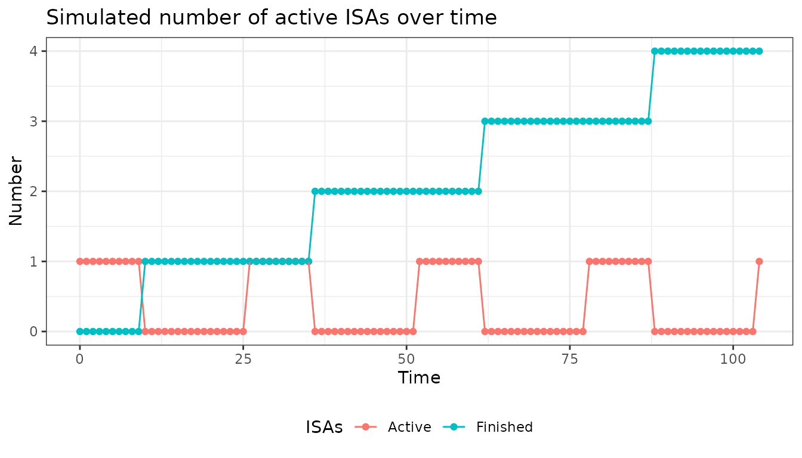
Use case: Planned pipeline where treatments arrive on predictable schedule
Strategy 2: Capacity-Constrained
Never exceed 5 concurrent ISAs, add when slots available
capacity_limited <- new_lNewIntr(
fnNewIntr = function(lPltfTrial, lAddArgs) {
current_active <- lPltfTrial$lSnap$dActvIntr
max_capacity <- lAddArgs$nIntrMax
if (current_active < max_capacity) {
# Slot available - add 1 ISA with 40% probability each week
return(rbinom(1, 1, lAddArgs$prob_inclusion))
} else {
return(0) # At capacity, wait
}
},
lAddArgs = list(
nIntrMax = 5,
prob_inclusion = 0.4
)
)
plot(capacity_limited)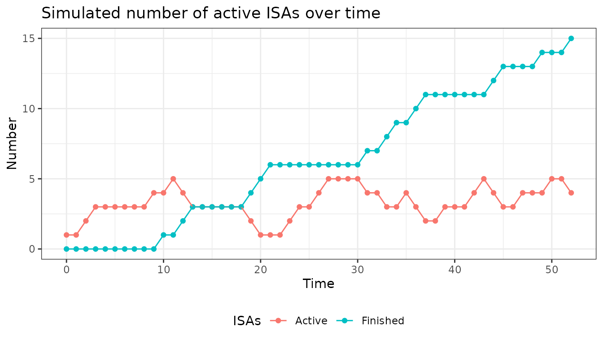
Use case: Limited enrollment capacity or operational constraints
Strategy 3: Burst Entry
Add multiple ISAs when pipeline releases them
burst_entry <- new_lNewIntr(
fnNewIntr = function(lPltfTrial, lAddArgs) {
current_active <- lPltfTrial$lSnap$dActvIntr
max_capacity <- lAddArgs$nIntrMax
available_slots <- max_capacity - current_active
if (available_slots > 0) {
# Randomly add 0, 1, or 2 ISAs (but not more than available slots)
to_add <- sample(0:2, 1, prob = c(0.5, 0.3, 0.2)) # 50% none, 30% one, 20% two
return(min(to_add, available_slots))
}
return(0)
},
lAddArgs = list(nIntrMax = 5)
)
plot(burst_entry)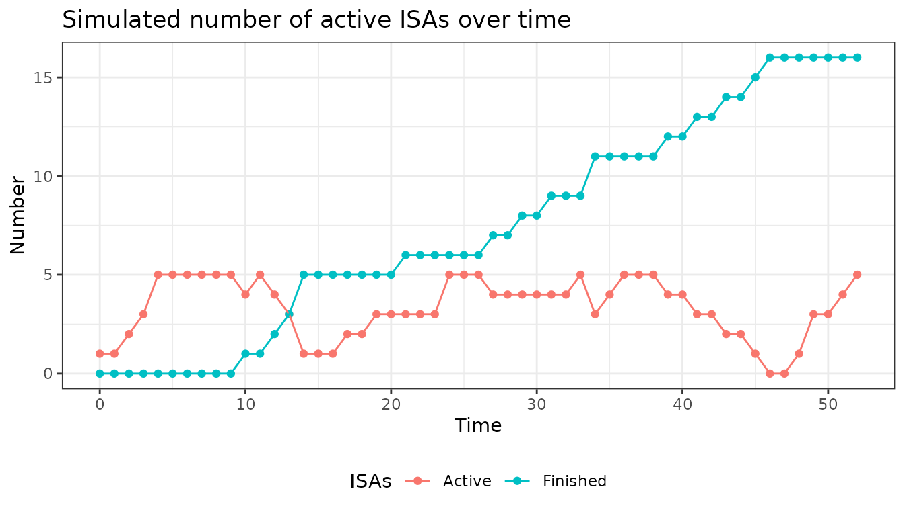
Use case: Multiple treatments complete preclinical studies simultaneously
Strategy 4: Adaptive Timing
Vary inclusion probability over time (e.g., ramp up then slow down)
adaptive_entry <- new_lNewIntr(
fnNewIntr = function(lPltfTrial, lAddArgs) {
current_week <- lPltfTrial$lSnap$dCurrTime
# Different probabilities for different phases
if (current_week <= 20) {
prob <- 0.6 # High early on
} else if (current_week <= 40) {
prob <- 0.3 # Moderate middle
} else {
prob <- 0.1 # Low near end
}
return(rbinom(1, 1, prob))
},
lAddArgs = list()
)
plot(adaptive_entry)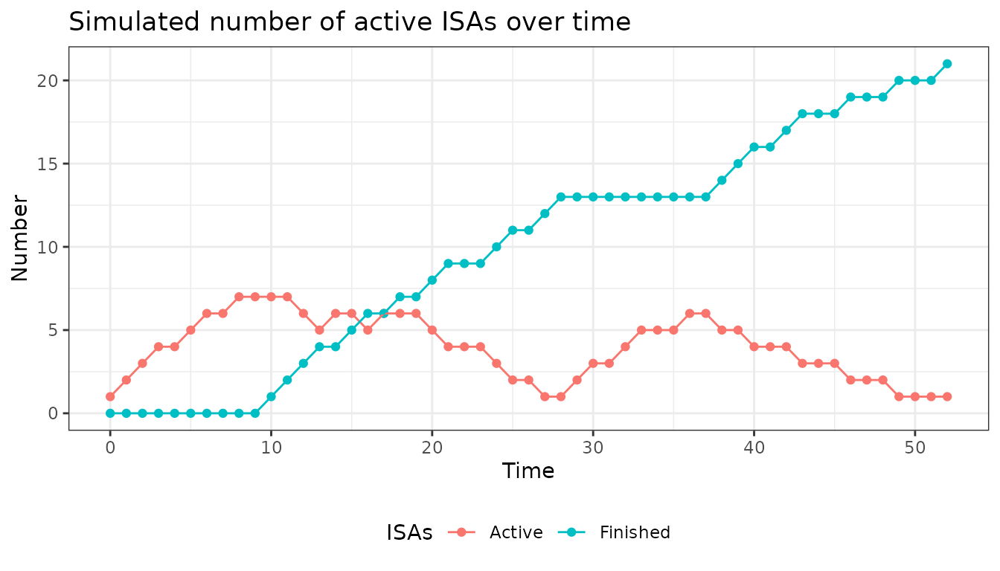
Use case: Known pipeline schedule or strategic trial phases
Realistic Example: Oncology Platform
Imagine designing a platform for novel cancer immunotherapies:
Requirements:
- Start with 2 ISAs (treatments already approved for Phase 2)
- Maximum 6 concurrent ISAs (enrollment capacity)
- Add new ISA only after at least 12 weeks (time to assess safety)
- Stop adding after 8 total ISAs evaluated
- ISAs run for variable duration (15-25 weeks until decision)
oncology_platform <- new_lNewIntr(
fnNewIntr = function(lPltfTrial, lAddArgs) {
current_time <- lPltfTrial$lSnap$dCurrTime
current_active <- lPltfTrial$lSnap$dActvIntr
total_so_far <- length(lPltfTrial$lSnap$vIntrInclTimes)
last_entry <- max(lPltfTrial$lSnap$vIntrInclTimes)
# Check all conditions
weeks_since_last <- current_time - last_entry
slot_available <- current_active < lAddArgs$max_concurrent
not_at_total_limit <- total_so_far < lAddArgs$max_total
waited_long_enough <- weeks_since_last >= lAddArgs$min_wait
# Add 1 ISA if all conditions met
if (slot_available && not_at_total_limit && waited_long_enough) {
return(1)
}
return(0)
},
lAddArgs = list(
max_concurrent = 6,
max_total = 8,
min_wait = 12
)
)
# Visualize with variable ISA durations
plot(
oncology_platform,
nIntrStart = 2,
dCurrTime = 1:100,
cIntrTime = "random",
dIntrTimeParam = 0.05 # ~5% chance of completing each week (avg 20 weeks)
)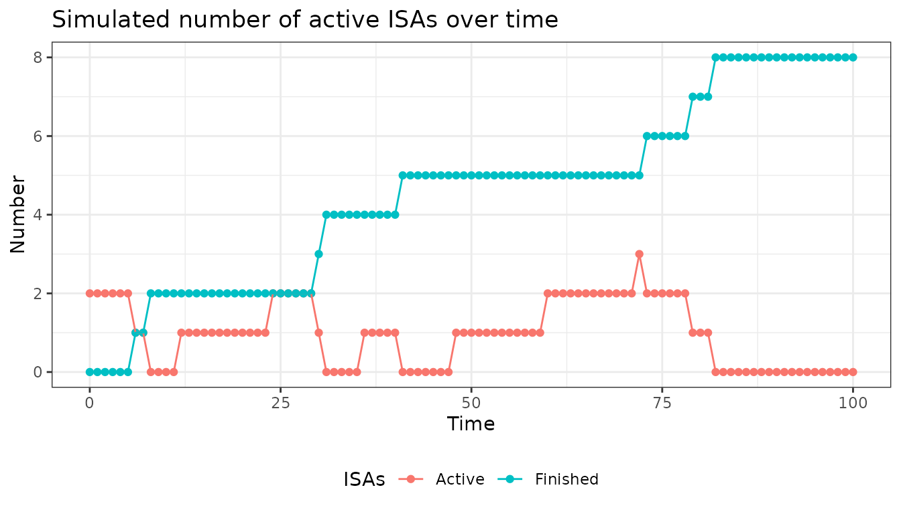
Function Reference
Helper Function: lNewIntr()
Quick setup for common “replacement” pattern
lNewIntr(
nMaxIntr, # Maximum total number of ISAs to evaluate
nStartIntr # Number of ISAs to start with
)Returns: An lNewIntr object that
replaces finished ISAs with new ones
Constructor: new_lNewIntr()
Full control with custom logic
new_lNewIntr(
fnNewIntr = function(lPltfTrial, lAddArgs) {
# Your custom logic here
# Return: integer number of ISAs to add
},
lAddArgs = list(...) # Your custom parameters
)Plot
Plotting objects created by lNewIntr or
new_lNewIntr displays the number of active and finished
interventions over time.
There are a few global variables that this specific plot function
requires. dCurrTime states the current time point and needs
to start with 1. cIntrTime and dIntrTimeParam
describe the in-trial-time of interventions. Depending on the input for
cIntrTime the function expects different types of input for
dIntrTimeParam:
-
cIntrTime= “fixed”-
dIntrTimeParam - natural number determining how many time units interventions stay in the trial
-
- cIntrTime` = “random”
-
dIntrTimeParam - probability of an ISA leaving the trial at every time step
-
By default ISA’s leave after 10 time units which means that
cIntrTime is “fixed” with dIntrTimeParam
10.
For the actual plot you just call plot() with the object
you want to plot.
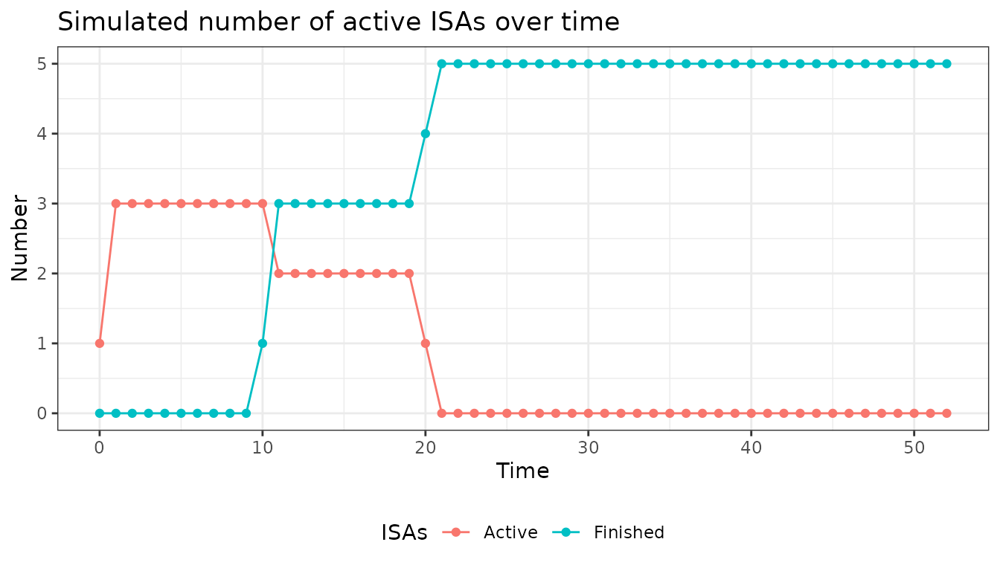
Any changes in global variables can be specified in the plot call. If you are only interested in 20 time steps rather than 52 and want trials to leave with a probability of 0.2 every time step you can call:
x <- lNewIntr(nMaxIntr = 10, nStartIntr = 2)
plot(
x,
dCurrTime = 1:20,
cIntrTime = "random",
dIntrTimeParam = 0.2
)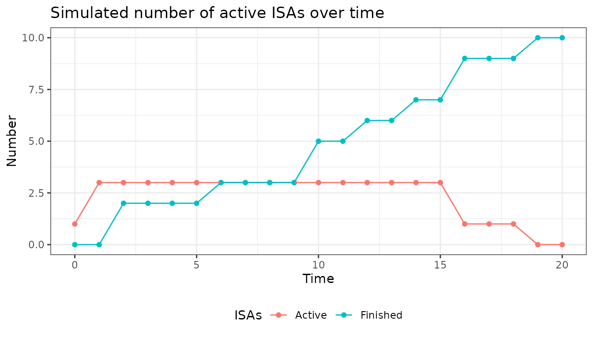
Optionally you can also state the global variables you added in the
object created by the new_lRecrPars function.
Summary
The summary call provides information about the input you provided. It gives an overview about snapshot and additional variables as well the function that was implemented.
summary(x)## Specified inclusion function:
## [1] "if (is.null(lAddArgs$vArrTimes)) {\n if (lPltfTrial$lSnap$dCurrTime == 1) {\n dAdd <- lAddArgs$nStartIntr\n }\n else if (lPltfTrial$lSnap$dExitIntr > 0 & length(lPltfTrial$lSnap$vIntrInclTimes) < lAddArgs$nMaxIntr) {\n dAdd <- min(lAddArgs$nMaxIntr - length(lPltfTrial$lSnap$vIntrInclTimes), lPltfTrial$lSnap$dExitIntr)\n }\n else {\n dAdd <- 0\n }\n} else {\n dAdd <- sum(lPltfTrial$lSnap$dCurrTime == lAddArgs$vArrTimes)\n}"
##
## Specified arguments:
## $nMaxIntr
## [1] 10
##
## $nStartIntr
## [1] 2
##
## $vArrTimes
## NULLExamples
- Replace outgoing ISAs with helper function
x <- lNewIntr(nMaxIntr = 4, nStartIntr = 2)
# in default version, replace every outgoing ISA until a maximum number of ISAs (in this case 4)
plot(x)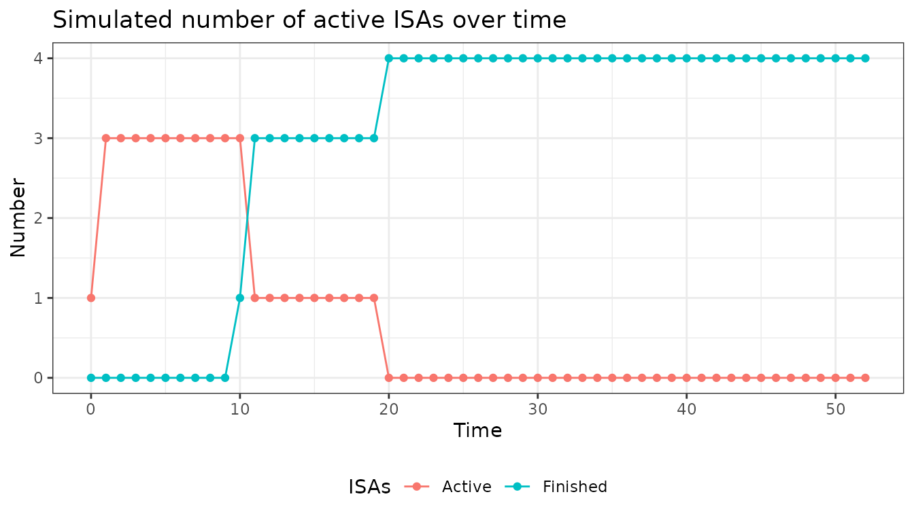
# default plot assumes an in-trial time for ISAs of 10 time steps
summary(x)## Specified inclusion function:
## [1] "if (is.null(lAddArgs$vArrTimes)) {\n if (lPltfTrial$lSnap$dCurrTime == 1) {\n dAdd <- lAddArgs$nStartIntr\n }\n else if (lPltfTrial$lSnap$dExitIntr > 0 & length(lPltfTrial$lSnap$vIntrInclTimes) < lAddArgs$nMaxIntr) {\n dAdd <- min(lAddArgs$nMaxIntr - length(lPltfTrial$lSnap$vIntrInclTimes), lPltfTrial$lSnap$dExitIntr)\n }\n else {\n dAdd <- 0\n }\n} else {\n dAdd <- sum(lPltfTrial$lSnap$dCurrTime == lAddArgs$vArrTimes)\n}"
##
## Specified arguments:
## $nMaxIntr
## [1] 4
##
## $nStartIntr
## [1] 2
##
## $vArrTimes
## NULL- Add an intervention every 4 time units
x <-
new_lNewIntr(
fnNewIntr = function(lPltfTrial, lAddArgs) {
# if it has been 4 time units since last inclusion, add one ISA
if (lPltfTrial$lSnap$dCurrTime == max(lPltfTrial$lSnap$vIntrInclTimes) + lAddArgs$nTimeDiff) {
dAdd <- 1
} else {
dAdd <- 0
}
return(dAdd)
},
lAddArgs = list(nTimeDiff = 4)
)
plot(x)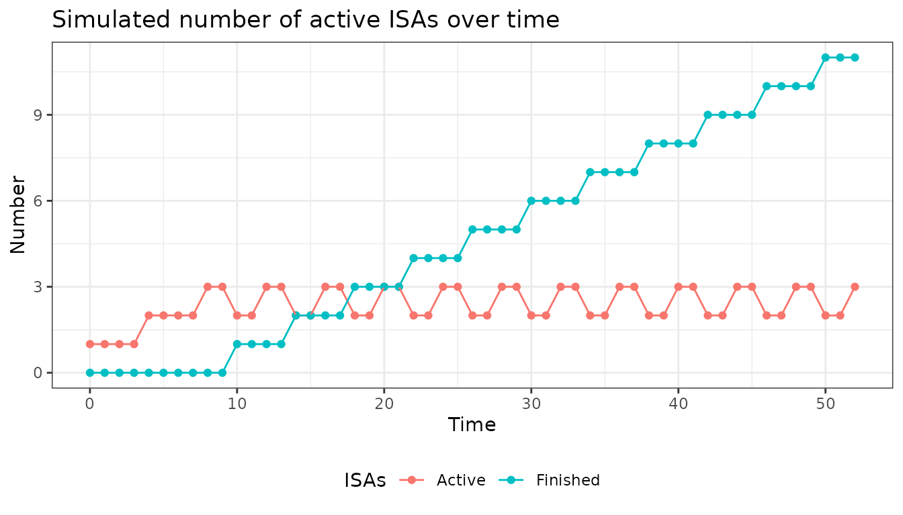
summary(x)## Specified inclusion function:
## [1] "if (lPltfTrial$lSnap$dCurrTime == max(lPltfTrial$lSnap$vIntrInclTimes) + lAddArgs$nTimeDiff) {\n dAdd <- 1\n} else {\n dAdd <- 0\n}"
##
## Specified arguments:
## $nTimeDiff
## [1] 4- Random entry of ISAs, add max 2 at a time, maximum 5 parallel
# Add ISAs with random probability
# never more than two at the same time and never allow more than 5 to run in parallel
x <-
new_lNewIntr(
fnNewIntr = function(lPltfTrial, lAddArgs) {
if (lPltfTrial$lSnap$dActvIntr < lAddArgs$nIntrMax) {
dAdd <- min(rbinom(1, 3, lAddArgs$prob_inclusion), lAddArgs$nIntrMax - lPltfTrial$lSnap$dActvIntr)
} else {
dAdd <- 0
}
return(min(2, dAdd))
},
lAddArgs = list(
nIntrMax = 5,
prob_inclusion = 0.4
)
)
plot(x)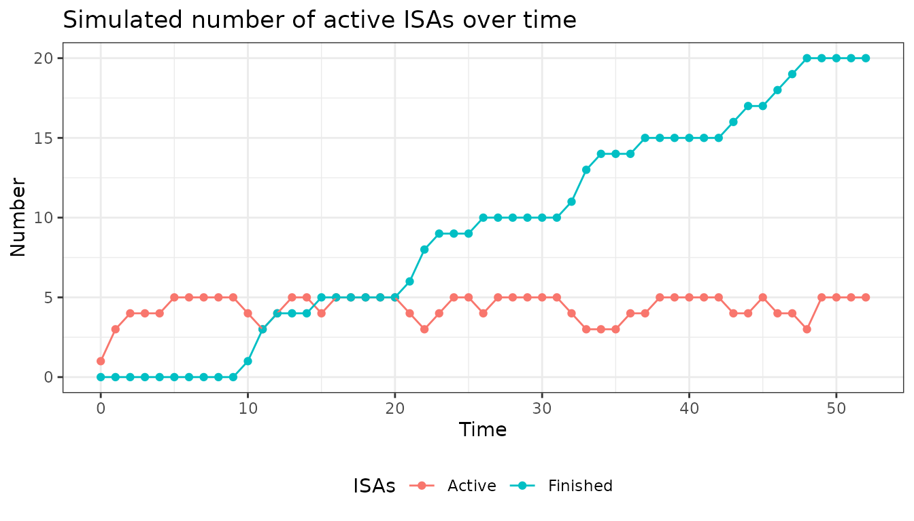
summary(x)## Specified inclusion function:
## [1] "if (lPltfTrial$lSnap$dActvIntr < lAddArgs$nIntrMax) {\n dAdd <- min(rbinom(1, 3, lAddArgs$prob_inclusion), lAddArgs$nIntrMax - lPltfTrial$lSnap$dActvIntr)\n} else {\n dAdd <- 0\n}"
##
## Specified arguments:
## $nIntrMax
## [1] 5
##
## $prob_inclusion
## [1] 0.4- As before, with inclusion stop for some time points
x <-
new_lNewIntr(
fnNewIntr = function(lPltfTrial, lAddArgs) {
if (lPltfTrial$lSnap$dActvIntr < lAddArgs$nIntrMax & lPltfTrial$lSnap$bInclAllowed) {
dAdd <- min(rbinom(1, 3, lAddArgs$prob_inclusion), lAddArgs$nIntrMax - lPltfTrial$lSnap$dActvIntr)
} else {
dAdd <- 0
}
return(min(2, dAdd))
},
lAddArgs = list(
nIntrMax = 5,
prob_inclusion = 0.4
)
)
plot(
x,
bInclAllowed = c(
rep(TRUE, 15),
rep(FALSE, 15),
rep(TRUE, 22)
)
)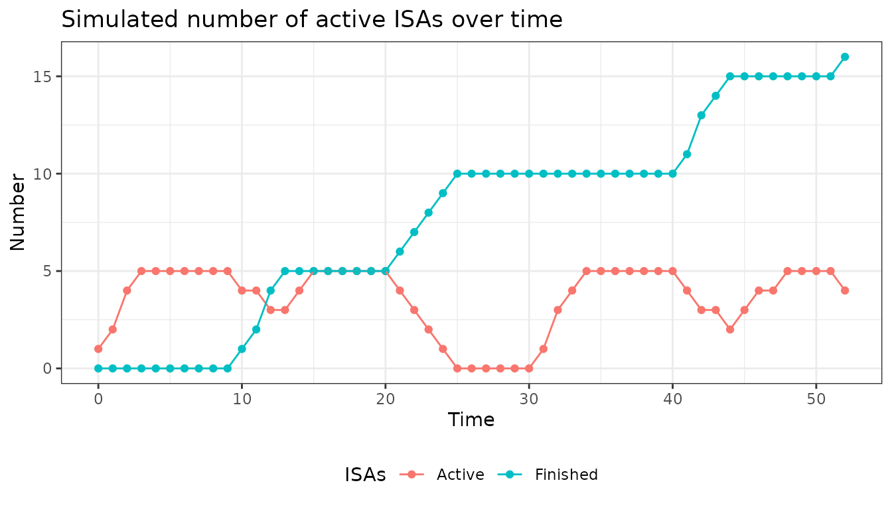
summary(x)## Specified inclusion function:
## [1] "if (lPltfTrial$lSnap$dActvIntr < lAddArgs$nIntrMax & lPltfTrial$lSnap$bInclAllowed) {\n dAdd <- min(rbinom(1, 3, lAddArgs$prob_inclusion), lAddArgs$nIntrMax - lPltfTrial$lSnap$dActvIntr)\n} else {\n dAdd <- 0\n}"
##
## Specified arguments:
## $nIntrMax
## [1] 5
##
## $prob_inclusion
## [1] 0.4- Different probabilities of inclusion for different time points
# Every 7th time step the probability for inclusion of an arm is increased
x <- new_lNewIntr(
fnNewIntr = function(lPltfTrial, lAddArgs) {
if(lPltfTrial$lSnap$dCurrTime %% 7 == 0){
dAdd <- sample(c(1,0), 1, prob = c(lAddArgs$prob_incl_1, 1-lAddArgs$prob_incl_1))
} else {
dAdd <- sample(c(1,0), 1, prob = c(lAddArgs$prob_incl_2, 1-lAddArgs$prob_incl_2))
}
return(dAdd)
},
lAddArgs = list(prob_incl_1 = 0.8, prob_incl_2 = 0.1)
)
plot(x)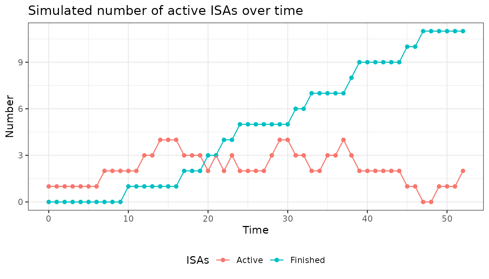
- Random end of ISAs
# Now the end of ISAs is not after a fixed interval but is randomly drawn
# On average every 5 days an arm enters, and every 10 days an arm leaves
x <- new_lNewIntr(
fnNewIntr = function(lPltfTrial, lAddArgs) {
dAdd <- sample(c(1,0), 1, prob = c(lAddArgs$prob_incl, 1-lAddArgs$prob_incl))
return(dAdd)
},
lAddArgs = list(prob_incl = 0.2)
)
plot(
x,
cIntrTime = "random",
dIntrTimeParam = 0.1
)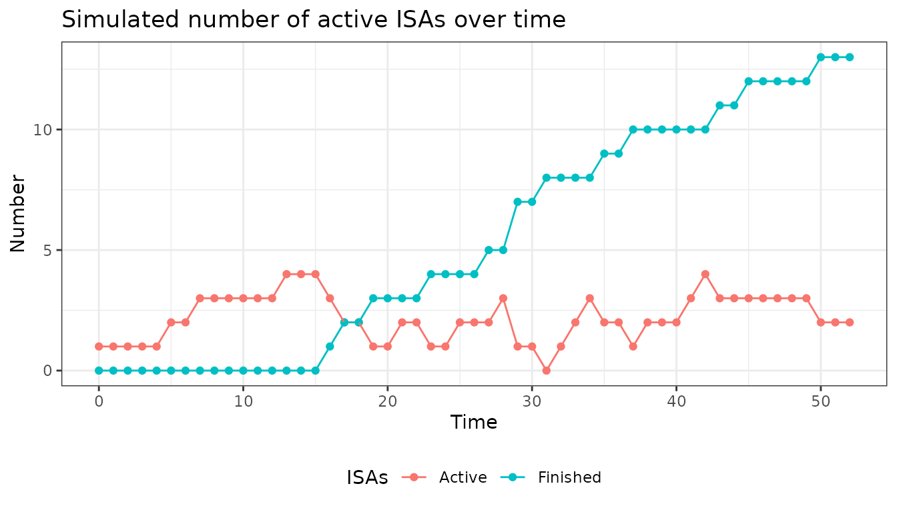
Exercises
Below will be some tasks of increasing complexity to make you comfortable using the module and figure out difficulties.
Tasks
Try to use the module to program the following tasks according to the instructions. The solutions are given below. The examples of the vignette may serve as a helping hand. The plots below show what the plotted output could look like.
1. With a 50:50 % chance let 1 or 2 ISAs enter every 5th time unit and let the maximum number of total ISAs be 10.
x <- new_lNewIntr(
fnNewIntr = function(lPltfTrial, lAddArgs){
# if the conditions are met (every 5th time unit & there are less than 10 ISAs so far) we randomly draw 1 or 2 to determine how many ISAs should be added
if((lPltfTrial$lSnap$dCurrTime %% 5 == 0) & (length(lPltfTrial$lSnap$vIntrInclTimes) < lAddArgs$nIntrMax)){
dAdd <- sample(c(1,2), 1)
} else {
# otherwise no ISA is added
dAdd <- 0
}
},
# here we set the maximum number of total interventions to 10
lAddArgs = list(nIntrMax = 10)
)
plot(x)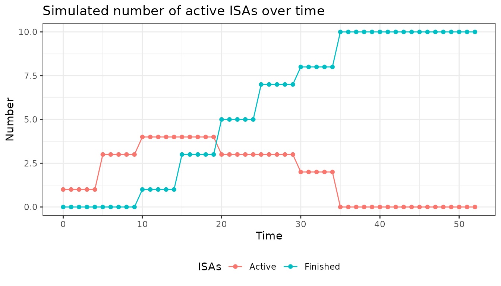
2. Let the entry of ISAs be random, with an entry probability of 0.2 at each time step, the maximum number of total ISAs be 6 and the maximum number of parallel ISAs be 3. For visualization, let the ISAs duration be 12.
*Hint: duration of ISAs is specified in the plot function, as this is not a feature of the lNewIntr module.
x <- new_lNewIntr(
fnNewIntr = function(lPltfTrial, lAddArgs){
# if the conditions are met (number of parallel ISAs <3, number of total ISAs < 6) we randomly draw if an ISA is added with the stated probabilities
if((length(lPltfTrial$lSnap$IntrInclTimes) < lAddArgs$nIntrMax) & (lPltfTrial$lSnap$dActvIntr < lAddArgs$nIntrParallel)){
dAdd <- sample(c(1,0), 1, prob = c(lAddArgs$prob, 1-lAddArgs$prob))
} else {
dAdd <- 0
}
return(dAdd)
},
# here the additional arguments are specified (max number of parallel interventions, max number of total interventions, entry probability)
lAddArgs = list(
nIntrParallel = 3,
nIntrMax = 6,
prob = 0.2
)
)
# here we set the duration of interventions to be fixed (intr_itt) with duration 12 (intr_itt_param)
plot(
x,
cIntrTime = "fixed",
dIntrTimeParam = 12
)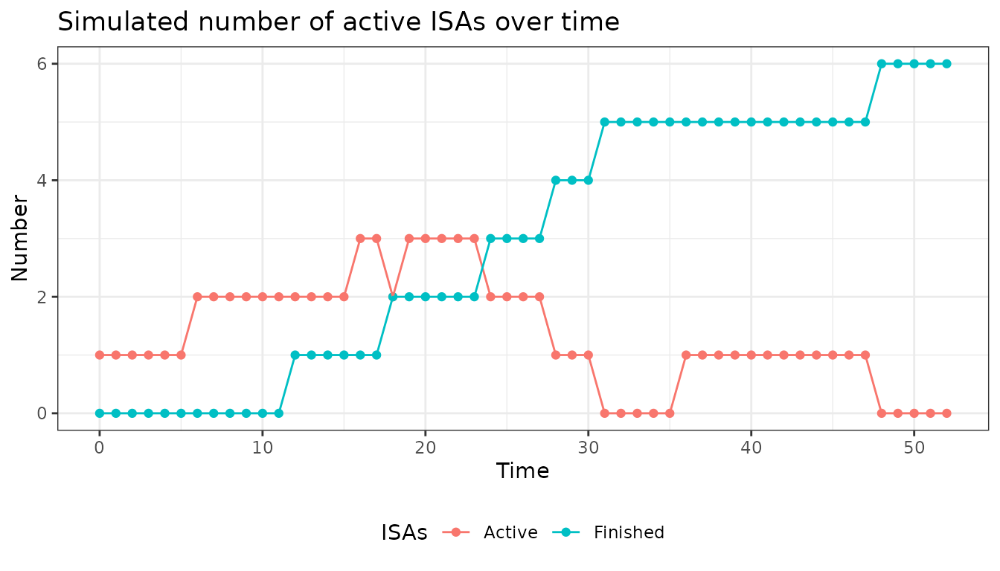
3. Let the entry and exit of ISAs be random with probabilities 0.2 and 0.1 respectively. Only consider a simulation period of 40 timesteps instead of the default of 52. Additionally no recruitment should happen between time unit 10 and 20.
*Hint: the number of time steps, recruitment window and exit probability are specified in the plot function, as these are not features of the lNewIntr module.
x <- new_lNewIntr(
fnNewIntr = function(lPltfTrial, lAddArgs){
if(lPltfTrial$lSnap$bInclAllowed){
dAdd <- sample(c(1,0), 1, prob = c(lAddArgs$prob, 1-lAddArgs$prob))
} else {
dAdd <- 0
}
return(dAdd)
},
lAddArgs = list(prob = 0.2)
)
# here we set the arguments which are not part of the lNewIntr module, but are still specified
# we have to state that the exit of ISAs is random (intr_itt) with a probability of 0.1 (intr_itt_param) at each time step. Additionally we change the simulation duration (dCurrTime) to 40 time steps and define the enrollment window (bInclAllowed).
plot(
x,
cIntrTime = "random",
dIntrTimeParam = 0.1,
dCurrTime = 1:40,
bInclAllowed = c(rep(TRUE, 10), rep(FALSE, 10), rep(TRUE, 20)), # has to be a vector of the same length as dCurrTime so that for each time step a value can be taken from the vector
)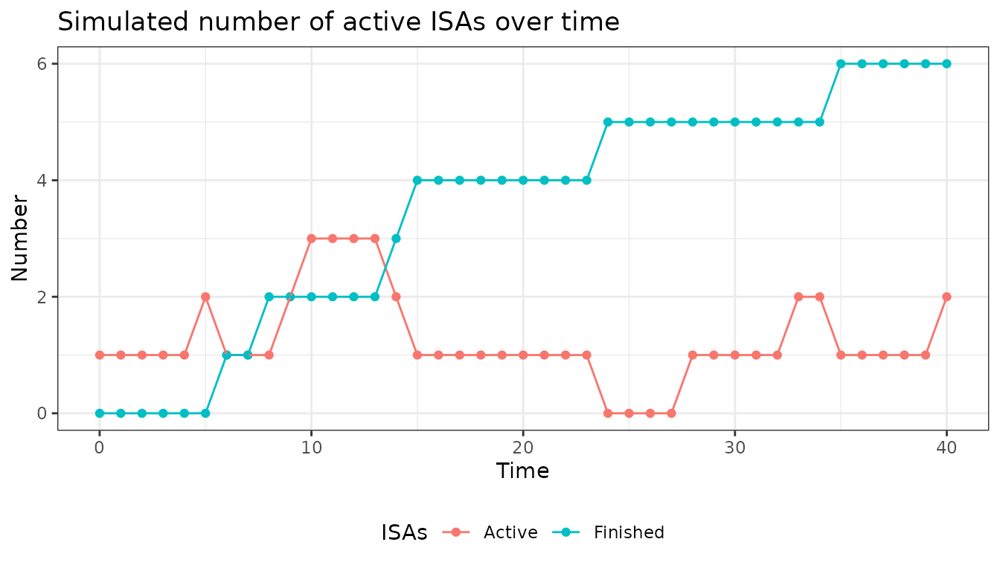